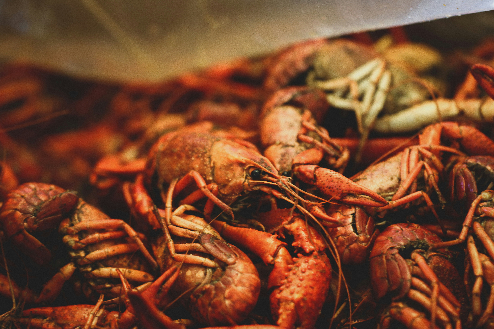

Cajun food is a rustic, bold-flavored Louisiana cuisine rooted in French, African, and Spanish traditions, characterized by the "holy trinity" (celery, bell peppers, onions) and a smoky roux. Staples include hearty gumbo, jambalaya, étouffée, boudin sausage, dirty rice, and boiled crawfish, often featuring wild game or local seafood
Cajun Dishes and Techniques
Cajun Dishes
- Gumbo: A thick stew with a dark roux, featuring chicken, andouille sausage, or seafood, often thickened with okra or filé powder.
- Jambalaya: A one-pot dish combining rice, smoked sausage, chicken, or seafood with spices.
- Crawfish Étouffée: Smothered shellfish served over white rice.
- Boudin: A sausage made of rice, pork, liver, and spices.
- Dirty Rice: Rice cooked with ground pork, chicken livers, and the "holy trinity."
- Red Beans and Rice: A classic dish often made with smoked sausage and kidney beans.
- Po' Boys: Sandwiches stuffed with fried seafood (shrimp, catfish, oysters) on French bread.
- Cracklins: Fried pork fat and skin, seasoned with spicy blends.
Essential Components & Techniques
- The Holy Trinity: The foundational base of celery, bell pepper, and onion.
- Roux: A slow-cooked mixture of flour and fat used for deep flavor and thickening.
- Seasoning: Heavy use of cayenne, garlic, and hot sauce.
- Cast Iron: The preferred cookware for heat retention and developing flavor.
